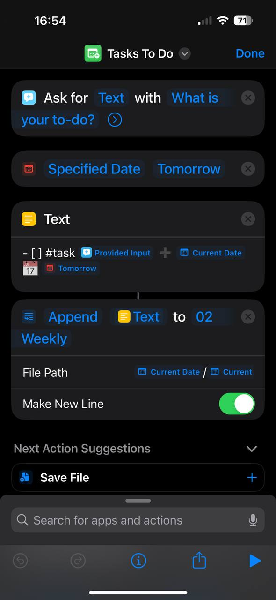

아이폰 단축어로 Obsidian 쉽게 활용하기
Obsidian과 함께한 여정이 일년이 조금 넘었네요! 1년 전 엄청난 이 노트앱을 발견, 제 일상의 생산성과 조금 더 계획된 일상을 보낼 수 있게 도와 주고 있습니다. Markdown, 그리고 커뮤니티 플러그인들은 옵시디안을 더욱 더 재미있고 유연하게 해주는 것 같고, 모든 사람들이 알았으면 좋겠어요! 옵시디안 관련 글은 한국어로도 적어보려 합니다.
이 블로그에서, 제가 어떻게 아이폰 단축어를 설정해서 Obsidian에 노트를 작성하고 할 일을 추적하는지 공유하려고 합니다. 지금까지 6개월 동안 아주 잘 쓰고 있는 기능이며, 이 방법은 r/Obsidian 서브레딧을 통해 발견했어요!, 역시 커뮤니티 베이스가 짱인거 같아요.
평소 Obsidian을 어떻게 쓰는가
먼저, 아이폰 단축어로 뭘 해서 옵시디안을 쓰고있는지 보여주기위해, 제 Obsidian 설정부터 간략하게 말씀드리자면:
- 저는 Obsidian periodic notes 플러그인과 templater 플러그인을 이용해 주간 노트 (Weekly notes)를 만듭니다.
- 주간 노트에서, 제 To-do 들(지난 기한/오늘 기한/이번 주 기한)이 obsidian-task 플러그인과 dataview 플러그인으로 나타납니다.
- 제 아이폰과 맥을 동기화하기 위해 아이클라우드를 사용하고 있습니다
평소 옵시디안을 어떻게 사용하나면:
- 무언가를 해야 한다고 생각이 들 때마다, 그것을 기한과 함께 주간 노트에 적습니다.
- 무작위 생각들도 주간 노트에 적습니다.
- 매주 주말마다 일주일 동안 필요한 식료품 쇼핑을 위한 식료품 목록 노트 (간단한 할 일 형식)
- 콘텐츠 아이디어를 기억하기 위한 콘텐츠 목록 노트
그러나
일주일 동안 해야 할 일들을 주간 노트에 적어두고 리뷰 하는 아이디어에 만족했지만, 문제가 있었어요.
갑자기 새로운 할 일이 생기거나, 무작위로 생각이 떠오르거나, 식료품 목록을 업데이트해야 할 때마다 제 아이폰에서 Obsidian 앱을 실행해야 했어요. 이 과정은 시간이 좀 걸리는데, 주간 노트를 클릭하고 - [ ] ...를 타이핑해야 했어요. 이런 작은 할 일들을 위해 이런 번거로운 작업을 해야 한다는 것이 너무 귀찮아서, 결국 노트를 적는 것을 포기할 때가 많았고 결국 또 계획과 구조없는 일상의 반복...
Obsidian 노트에 더 빠르게 접근하고 생각을 즉석에서 적을 수 있는 방법을 찾아보던중, '아이폰 단축어' 를 발견!
iOS 단축어
Shortcuts, 단축어는 애플이 개발한 시각적 스크립팅 어플리케이션으로, 애플 생태계(Mac, iPhone 등) 전체에서 사용할 수 있어요. 앱등이 13년 생활 이 기능을 이제서야 쓰게되다니! 자동화와 스크립팅 능력의 완벽한 조합입니다. 그리고 Obsidian의 유연성까지!
나의 단축어 1. 할 일을 주간 노트로

단축어를 통해 할 일 목록을 쉽게 Obisidian을 열지 않고도 추가할 수 있어요.

- "What is your to-do?"라는 문구로 텍스트를 요청해요.
- 데이터로 주입하기 위해 'tomorrow' 변수를 가져와요 (저는 obsidian-task 플러그인을 사용하고 만기일별로 to-do를 정렬해놔요)
-[]와#task를 포함한 텍스트와 내일의 날짜를 만기일로, 현재 날짜를 캡처해요- 캡처된 텍스트를
YYYY/YYYY-[W]ww경로에 새로운 줄로 추가해요 (앞에서 말씀드렸다 시피, 저는 periodic notes 플러그인을 사용해서 주간 노트를 설정해요)
My Shortcuts 2. 식료품 쇼핑 아이디어를 식료품 메모에

여기서도 같은 로직이 적용되고, 그냥 정적 파일에 텍스트를 넣는거라서 할 일 목록보다 더 간단해요.

- "what to buy?"라고 텍스트를 요청한 후에,
-[]를 포함한 텍스트를 캡쳐하고,- 캡처된 텍스트를
Grocery.md파일에 추가. 끗.
Closing
어떠세요? 코드 한 줄 없이 누구나 설정할 수 있는 초간단 자동화라고 자신있게 소개합니다ㅎㅎㅎ 이 작은 팁이 여러분들의 일상 생산성을 향상시키는 데 도움이 되길 바라면서, 다른 팁들 있으시면 댓글 달아주세요!